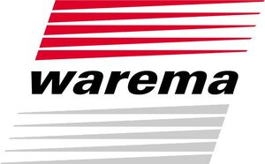

Trade Mark Journal No.2025/014 4 April 2025
WO0000001833988 (6,7,9,19,20,22,24,35,37,41,42)
Office of origin: Germany
Date of International Registration:6 February 2024
Date of designation in the UK:
6 February 2024

The mark contains the colours red, grey and black.
International priority date claimed: 7 August 2023
(Germany)
- Class 6
- Cladding made of aluminium sheet and galvanized iron sheet for building purposes; blinds made of light metal; roller blinds; roller shutters made of metal; metal outdoor sun blinds; pipes and tubes of metal; building materials of metal; transportable buildings, of metal; metallic mountings; sheets and plates of metal; fences of metal; supports of metal; partitions of metal; steel pipes and masts; ducts of metal for ventilating and air-conditioning installations; jalousies of metal; metal Venetian blinds for outdoor use; windows, window fittings, window frames and shutters made of metal; metal roof coverings, roof tiles and gutters of metal; vertical metal blinds for outdoor use; blackout systems consisting essentially of metallic external blinds; metal awning constructions for outdoor use; metal articulated arm awnings; daylight systems, namely translucent building materials made of metallic materials for supplying light in enclosed spaces; insect screens of metal; metal markisolettes for outdoor use; vertical metal awnings for outdoor use; metal facade awning constructions for outdoor use; metal drop-arm awning constructions for outdoor use; metal winter garden awning constructions for outdoor use; metal basket awning constructions for outdoor use.
- Class 7
- Machines and machine tool components for the metal and plastics processing industry; machine tools; plug-in machines for roller shutter profiles; machines for cutting, milling, punching; cutters [machines]; sewing machines; hand-held tools, other than hand-operated; machines for the textile industry; control devices for machines or motors; cloth cutting machines, included in this class; machines for producing roller shutters, included in this class; machines for injecting plastic moulds, included in this class.
- Class 9
- Display devices; chips [integrated circuits]; chronographs [time recording apparatus]; computers; computer peripheral devices; computer software; detectors; pressure gauges; electrical systems for the remote control of sun protection systems; electronic notice boards; remote control apparatus; radio receiving tuners; radio masts; hydrometer and hygrometer; control apparatus, electric; air analysis apparatus; measuring devices and instruments; meteorological instruments; transmitters for electronic signals and telecommunications; electro-dynamic apparatus for the remote control of signals; signal antennas; solar energy collectors for electricity generation; solar batteries; temperature indicators; electric monitoring apparatus, other than for medical purposes; anemometers; scientific, surveying, optical, measuring, signaling, control apparatus and instruments; apparatus and instruments for the conduction, distribution, transformation, storage or control of electric current; electronic control and optical apparatus and instruments for the control of sun protection systems, for building control systems, for building security systems, for drive technology and for the control of machines and mechanical equipment; electronic components and assemblies for the control system; images, photographs, videos or texts stored on electronic data carriers; software for minting non-fungible tokens [NFTs]; software for storing and exchanging non-fungible tokens; software for processing purchases or sales of virtual goods with non-fungible tokens; software for processing purchases or sales of virtual goods with non-fungible tokens; downloadable virtual goods authenticated by non-fungible tokens, namely cladding made of aluminium sheet and galvanised iron sheet for building purposed, blinds made of light metal, roller blinds, roller shutters made of metal, sun visors made of metal, metal pipes, building materials of metal, transportable metal buildings, fastening materials of metal, metal sheets, metal fences, metal supports, metal partitions, steel pipes and masts, metal pipes for ventilation and air conditioning systems, metal blinds, Venetian blinds, windows, window fittings, metal window frames and shutters, metal roof coverings, metal roof tiles and gutters, vertical blinds, metal pleated blinds, black-out systems, awnings, articulated arm awnings, daylight systems, insect screens, markisolettes, vertical awnings, facade awnings, drop arm awnings, conservatory awnings, basket awnings; downloadable virtual goods authenticated by non-fungible tokens, namely machines and machine tools for the metal and plastics processing industry, machine tools, plug-in machines for roller shutter profiles, machines for cutting to length, milling, punching, cutting machines and sewing machines, hand tools [not handoperated], machines for the textile industry, control devices for machines or motors, cloth cutting machines, machines for the production of roller shutters, machines for injecting plastic moulds; downloadable virtual goods authenticated by non-fungible tokens, namely display devices, chips [integrated circuits], chronographs [time recording devices], computers, computer peripherals and computer software, detectors, pressure gauges, electrical installations for the remote control of sun protection systems, electronic display panels, remote control devices, radio receivers and radio masts, hydro- and hygrometers, control apparatus [electrical], air analysis devices, measuring devices and instruments, meteorological instruments, transmitters for electronic signals and for telecommunications, remote signal control devices [electrodynamic], signal antennas, solar collectors for generating electricity, solar batteries, temperature indicators, monitoring apparatus [electrical], anemometers, scientific surveying, optical, measuring, signalling, control apparatus and instruments, apparatus and instruments for conducting, distributing, transforming, storing or controlling electric current, electronic control and optical apparatus and instruments for the control of sun protection systems, for building control systems, for building security systems, for drive technology and for the control of machines and mechanical equipment, electronic components and assemblies for control systems in this class; downloadable virtual goods authenticated by non-fungible tokens, namely building materials [non-metal], pipes [non-metal] for building purposes, transportable structures [non of metal], blinds and roller blinds and roller shutters, each made of wood and plastic, roller shutter manufacturing boxes [non-metal], cladding [non-metal], roof coverings, roof tiles and gutters, all non-metal, window frames and shutters [non-metal], window frames [non-metal], windows [non-metal], window glass [except glass for vehicle windows], fly screens, non-metal, floors [non-metal], greenhouse frames and greenhouses [transportable], non-metal, insulating glass for building purposes, wood panelling, awning constructions [non-metal], masts [non-metal], skylights [window flaps], not metal; downloadable virtual goods authenticated by non-fungible tokens, namely curtain rollers made of plastic, woven wooden blinds [furniture parts], curtain hooks, holders, rings, rollers and rods [not made of textile material], window fittings [not made of metal], fastening materials made of plastic, roller blinds made of textile material for indoor use, pleated blinds, roller blinds, interior blinds, interior roller blinds, statues and works of art made of wood, cork, reed, cane, willow, horn, bone, ivory, whalebone, tortoiseshell, amber, mother-of-pearl, meerschaum and substitutes for these materials or made of plastic; downloadable virtual goods authenticated by non-fungible tokens, namely metal Venetian blinds for indoor use, metal vertical blinds for indoor use; downloadable virtual goods authenticated by non-fungible tokens, namely awnings, sails, canvas tarpaulins, canvas constructions, namely sun sails; downloadable virtual goods authenticated by non-fungible tokens, namely woven fabrics and textile goods, sun visors, curtains made of textile or plastic, curtain holders made of textile, fabrics for textile purposes, mosquito and insect nets, roller blinds made of textile material, wool fabrics and blackout curtains.
- Class 19
- Building materials, not of metal; rigid pipes, not of metal, for building; transportable buildings, not of metal; blinds and roller blinds for outdoor use as well as roller shutters, each made of wood and plastic; roller shutter boxes for attachment to window frames (not of metal); cladding [not of metal] for use in construction; roof coverings, roof tiles and gutters, all non-metal; window shutters, not of metal; window frames, not of metal; windows, not of metal; window glass, other than vehicle window glass; insect screens, not of metal; floors, not of metal; greenhouse frames and greenhouses [transportable], not of metal; insulating glass for building; wood panelling awning constructions, not of metal; masts [poles], not of metal; window skylights, not of metal.
- Class 20
- Pulleys of plastics for curtains; woven wooden panels [furniture parts]; curtain hooks, holders, rings, rollers and rods [not made of textile material]; window fittings [not made of metal]; plastic fastening material; roller blinds made of textile material for indoor use; pleated blinds; roller blinds; indoor Venetian blinds; interior blinds; statues and works of art made of wood, cork, reed, cane, wicker, horn, bone, ivory, whalebone, shell, amber, mother-of-pearl, meerschaum and substitutes for these materials, or of plastic; metal Venetian blinds for indoor use; vertical metal blinds for indoor use; metal indoor sun blinds.
- Class 22
- Awnings made of textile materials; sails; tarpaulins of sailcloth; construction made of sailcloth, namely sun sails.
- Class 24
- Textiles and textile goods included in this class; sun blinds made of textile material for indoor use, included in this class; curtains of textile or plastic; curtain holders of textile material; fabrics for textile use; mosquito nets; insect protection nets; woollen cloth; blackout curtains.
- Class 35
- Wholesale services in relation to the following goods, both in physical and virtual form, namely umbrellas, parasols, garden furniture, stands, namely for parasols; retail services in relation to the following goods, both in physical and virtual form, namely umbrellas, parasols, garden furniture, stands, namely for parasols; wholesale services in relation to the following goods, both in physical and virtual form, namely cladding made of aluminium sheet and galvanised iron sheet, blinds made of light metal, roller blinds, roller shutters made of metal, sun visors made of metal, metal pipes, metal building materials, transportable metal buildings, metal fastening materials, metal sheets, metal fences, metal supports, metal partitions, steel pipes and masts, metal pipes for ventilation and air conditioning systems, metal blinds, Venetian blinds, windows, window fittings, metal window frames and shutters, roof coverings, metal roof tiles and metal gutters, vertical blinds, folding blinds, black-out systems, awnings, articulated arm awnings, daylight systems, insect screens, markisolettes namely awnings that combine drop-arm awnings and vertical awnings; retail services in relation to the following goods, both in physical and virtual form, namely cladding made of aluminium sheet and galvanised iron sheet, blinds made of light metal, roller blinds, roller shutters made of metal, sun visors made of metal, metal pipes, metal building materials, transportable metal buildings, metal fastening materials, metal sheets, metal fences, metal supports, metal partitions, steel pipes and masts, metal pipes for ventilation and air conditioning systems, metal blinds, Venetian blinds, windows, window fittings, metal window frames and shutters, roof coverings, metal roof tiles and metal gutters, vertical blinds, folding blinds, black-out systems, awnings, articulated arm awnings, daylight systems, insect screens, markisolettes namely awnings that combine drop-arm awnings and vertical awnings; wholesale services in relation to the following goods, both in physical and virtual form, namely display devices, chips [integrated circuits], chronographs [time recording devices], computers, computer peripherals and computer software, detectors, pressure gauges, electrical installations for the remote control of sun protection systems, electronic display boards, remote control devices, radio receivers and radio masts, hydro- and hygrometers, control apparatus [electric], air analysis apparatus, measuring devices and instruments, meteorological instruments, transmitters for electronic signals and for telecommunications, remote control devices for signals [electrodynamic], signal antennas, solar collectors for generating electricity, solar batteries, temperature indicators, monitoring apparatus [electric], anemometers, scientific, surveying, optical, measuring, signalling, control apparatus and instruments, apparatus and instruments for conducting, distributing, transforming, storing or controlling electric current, electronic control and optical apparatus and instruments for the control of sun protection systems, for building control systems, for building security systems, for drive technology and for the control of machines and mechanical equipment, electronic components and assemblies for control systems in this class, digital media in the form of images, photographs, videos, texts, software, namely downloadable digital files authenticated by non-fungible tokens [NFTs], software for storing, exchanging, buying and selling non-fungible tokens; retail services in relation to the following goods, both in physical and virtual form, namely display devices, chips [integrated circuits], chronographs [time recording devices], computers, computer peripherals and computer software, detectors, pressure gauges, electrical installations for the remote control of sun protection systems, electronic display boards, remote control devices, radio receivers and radio masts, hydro- and hygrometers, control apparatus [electric], air analysis apparatus, measuring devices and instruments, meteorological instruments, transmitters for electronic signals and for telecommunications, remote control devices for signals [electrodynamic], signal antennas, solar collectors for generating electricity, solar batteries, temperature indicators, monitoring apparatus [electric], anemometers, scientific, surveying, optical, measuring, signalling, control apparatus and instruments, apparatus and instruments for conducting, distributing, transforming, storing or controlling electric current, electronic control and optical apparatus and instruments for the control of sun protection systems, for building control systems, for building security systems, for drive technology and for the control of machines and mechanical equipment, electronic components and assemblies for control systems in this class, digital media in the form of images, photographs, videos, texts, software, namely downloadable digital files authenticated by non-fungible tokens [NFTs], software for storing, exchanging, buying and selling non-fungible tokens; wholesale services in relation to the following goods, both in physical and virtual form, namely building materials (non-metallic), pipes (non-metallic) for building purposes, transportable buildings (non-metallic), blinds, roller blinds, roller shutters made of wood and plastic, sun visors, not of metal, for building purposes, roller shutter manufacturing boxes (non-metallic), cladding (non-metallic), roof coverings, roof tiles and gutters, all not of metal, window frames and shutters (non-metallic), window frames (non-metallic), windows (non-metallic), window glass (except glass for vehicle windows), fly screens, not of metal, floors (non-metallic), greenhouse frames and greenhouses (transportable), not of metal, insulating glass for building purposes, wood panelling, awning constructions (non-metallic), masts (non-metallic), skylights (window flaps), not of metal; retail services in relation to the following goods, both in physical and virtual form, namely building materials (non-metallic), pipes (non-metallic) for building purposes, transportable buildings (non-metallic), blinds, roller blinds, roller shutters made of wood and plastic, sun visors, not of metal, for building purposes, roller shutter manufacturing boxes (non-metallic), cladding (non-metallic), roof coverings, roof tiles and gutters, all not of metal, window frames and shutters (non-metallic), window frames (non-metallic), windows (non-metallic), window glass (except glass for vehicle windows), fly screens, not of metal, floors (non-metallic), greenhouse frames and greenhouses (transportable), not of metal, insulating glass for building purposes, wood panelling, awning constructions (non-metallic), masts (non-metallic), skylights (window flaps), not of metal; wholesale services in relation to the following goods, both in physical and virtual form, namely curtain rollers made of plastic, woven wooden blinds [furniture], curtain hooks, holders, rings, rollers and rods [not of textile material], window fittings [not of metal], fastening materials made of plastic, roller blinds made of textile material, roller blinds, interior blinds, statues and works of art made of wood, cork, reed, cane, wicker, horn, bone, ivory, whalebone, tortoiseshell, amber, mother-of-pearl, meerschaum and substitutes for all these materials or of plastic, metal Venetian blinds for indoor use, metal vertical blinds for indoor use; retail services in relation to the following goods, both in physical and virtual form, namely curtain rollers made of plastic, woven wooden blinds [furniture], curtain hooks, holders, rings, rollers and rods [not of textile material], window fittings [not of metal], fastening materials made of plastic, roller blinds made of textile material, roller blinds, interior blinds, statues and works of art made of wood, cork, reed, cane, wicker, horn, bone, ivory, whalebone, tortoiseshell, amber, mother-of-pearl, meerschaum and substitutes for all these materials or of plastic, metal Venetian blinds for indoor use, metal vertical blinds for indoor use; wholesale services in relation to the following goods, both in physical and virtual form, namely awnings, sails, canvas tarpaulins, canvas constructions, namely sun sails; retail services in relation to the following goods, both in physical and virtual form, namely awnings, sails, canvas tarpaulins, canvas constructions, namely sun sails; wholesale services in relation to the following goods, both in physical and virtual form, namely textiles, sun visors, curtains of textile or plastic, curtain holders of textile, fabrics for textile purposes, mosquito and insect nets, roller blinds of textile material, woolen fabrics; retail services in relation to the following goods, both in physical and virtual form, namely textiles, sun visors, curtains of textile or plastic, curtain holders of textile, fabrics for textile purposes, mosquito and insect nets, roller blinds of textile material, woolen fabrics.
- Class 37
- Facility management or infrastructural building management, namely repair, maintenance and servicing of real estate including the associated utility systems, in particular heating and electrical systems; installation and repair of burglar alarm systems, heating systems, sun protection systems, air conditioning systems.
- Class 41
- Entertainment services, namely, online provision of non-downloadable sun protection products for use in virtual environments for entertainment purposes.
- Class 42
- Engineering services; design and development of computer hardware; design and development of computer programs; technical planning relating to real estate development projects; installation of computer software; consulting for computer hardware and software; construction drafting; conducting technical project studies; all aforementioned services also provided in virtual environments.
WAREMA Renkhoff SE
Representative: Murgitroyd & Company, 165-169 Scotland Street Glasgow G5 8PL UNITED KINGDOM